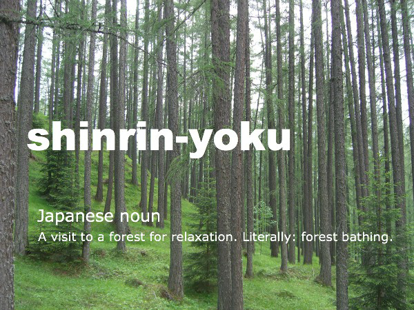
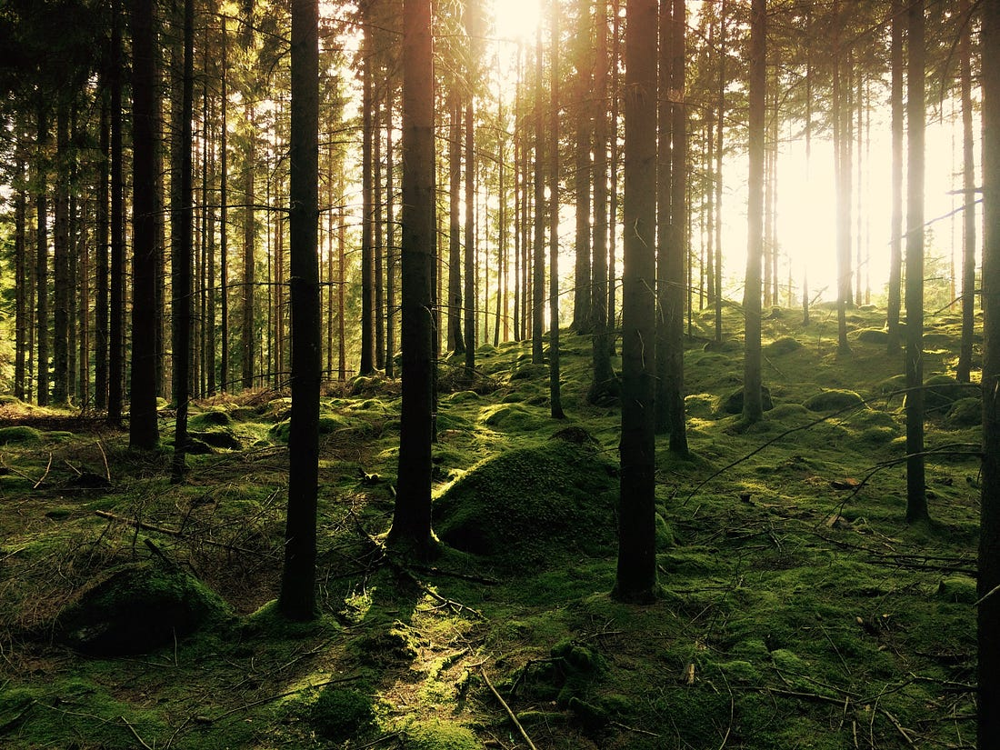
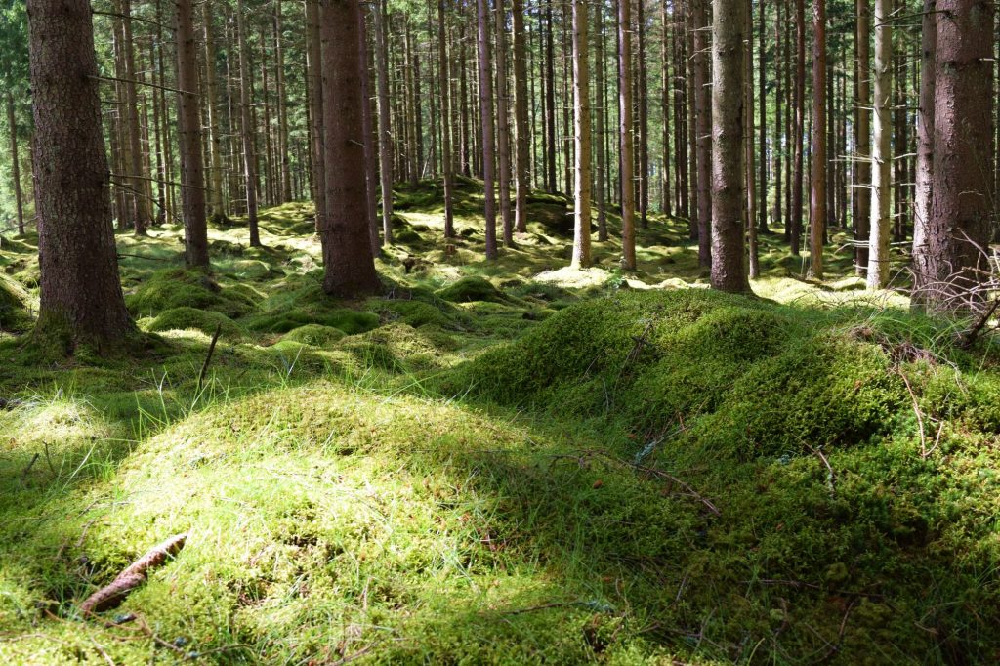
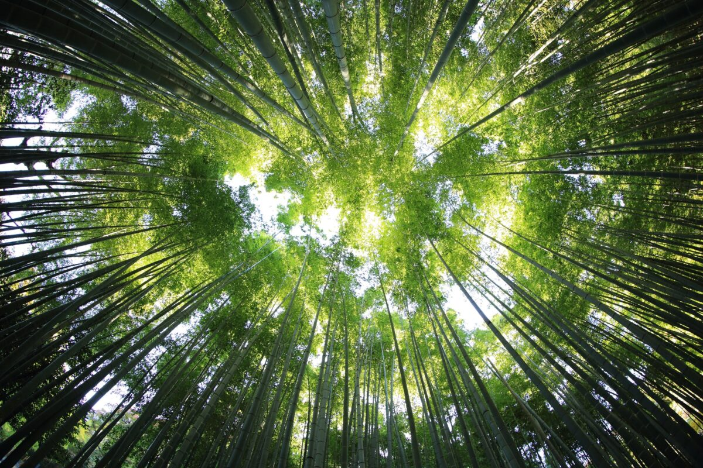

Shinrin-Yoku means "taking in the forest atmosphere
with all the senses"
or literally "forest bathing".
The method is Japanese and has
emerged as a response to the stress symptoms that are spreading across
the world today. And the research results clearly show that blood
pressure drops, stress hormones are reduced, sleep becomes deeper,
concentration improves and the immune system increases after stays in
the forest. In addition, it has been shown that the positive effects are
both direct and last for quite some time. It is enough to be 30 minutes
in a forest for one to notice that the stress level, blood pressure and
heart rate improve. And spending a weekend in nature boosts the immune
system for a whole month.